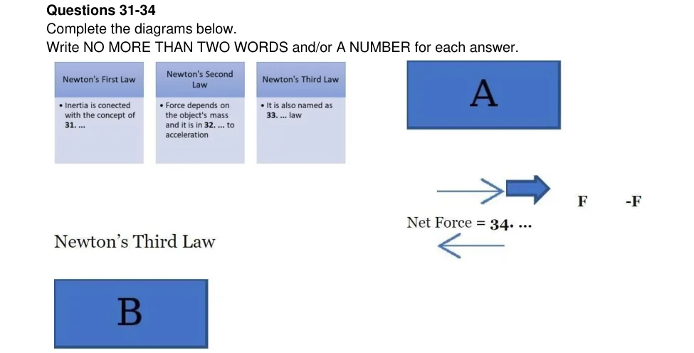
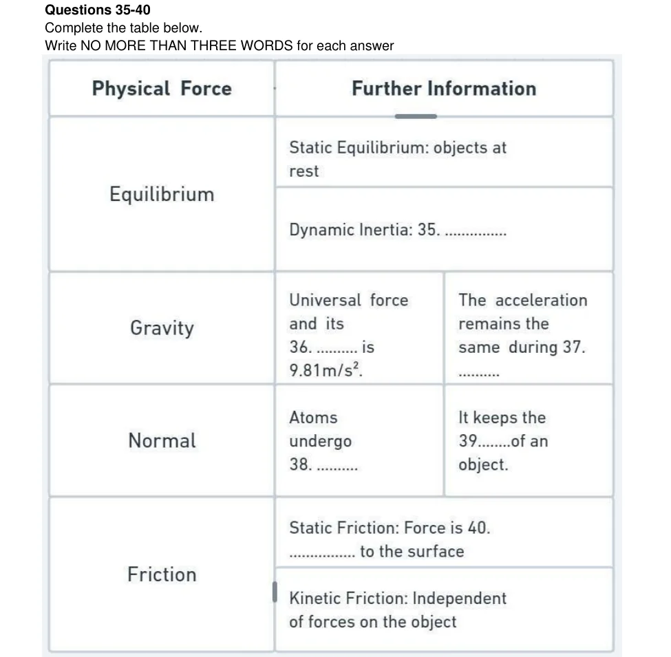
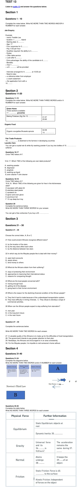

IELTS Listening: Test 13
Listening and questions
Section 1Questions 1–10
Questions 1–10
Complete the notes below. Write NO MORE THAN TWO WORDS AND/OR A
NUMBER for each answer.
Job Enquiry
Example
name: Freddie Lea
location: 1 Island
Starting date: 2
Age: 17
Four vacancies for 3
Pay: 5.52 per hour
Qualities required: the ability to 4
Duties:
+ Offer table service
+ Look after 5
Extra advantage: the ability of the candidate to 6
Benefits:
+ free 7
+ a 8 will be provided
Interview arranged for 9 at 10:00 am
Need to take
+ a reference letter from employer
+ a bank statement
+ the application form with a
10
Section 2Questions 11–20
Questions 11–15
Complete the notes below. Write NO MORE THAN THREE WORDS and/or A
NUMBER for each answer.
Green Home
Three sections available:
11 groceries
Baking Potatoes (Kg) Six 12
£1.57
£0.60
Organic Food
£2.09
Organic courgettes Brussels sprouts
13
Fair Trade Products -
14 is destined to the farmers in developing countries
Laundry Care
You can get a crystal rain & white lily washing powder if you buy two bottles of 15 softener.
Questions 16–17
Circle TWO letters A-F.
16 & 17 Which TWO of the following are own-label products?
Questions 18–19
Circle TWO letters A-F.
18 & 19 Which TWO of the following are given for free in the kitchenware aisle?
Question 20
Complete the sentence below.
Write NO MORE THAN THREE WORDS for your answer.
You can get a free corkscrew if you buy a 20
Section 3Questions 21–30
Questions 21–26
Choose the correct letter, A, B or C.
21 How could ancient Africans recognize different stars?
22 In which way do the Weyaka people like to deal with their money?
23 What do the Africans obtain from their suffering?
24 What are the local people concerned with?
25 What is the reason for the declining financial condition of the African people?
26 When can the African people expect to stop suffering from starvation?
Questions 27–30
Complete the sentences below.
Write NO MORE THAN TWO WORDS for each answer.
27 A valuable quality of the Africans is to make up for the difficulties of food transportation.
28 The government intends to pay greater attention to their plan.
29 Nowadays, the Africans are encouraged to in an area consistently.
30 For the Weyaka people, it is impolite to visit someone’s home without.
Section 4Questions 31–40


Show the original book pages (picture)

Tap or click the pages to open them full size in a new tab.
Check your answers
Marking ignores capital letters and accepts plurals and the usual alternative answers. If your answer is right but not accepted, press My answer is also right under it.
Tapescript
Check your answers first, then the tapescript opens here.